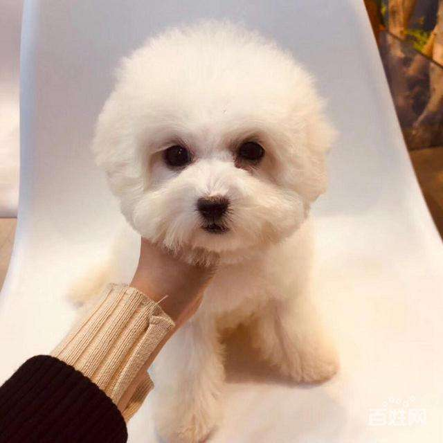
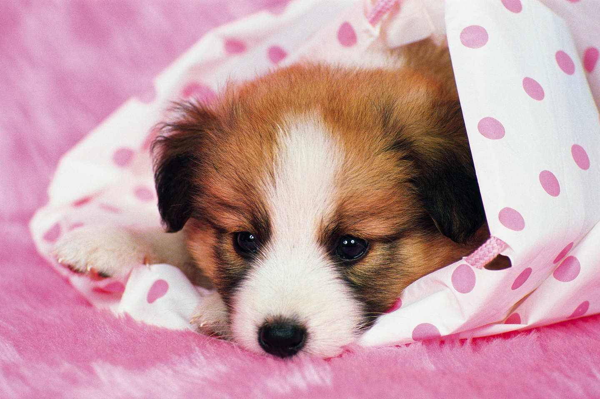
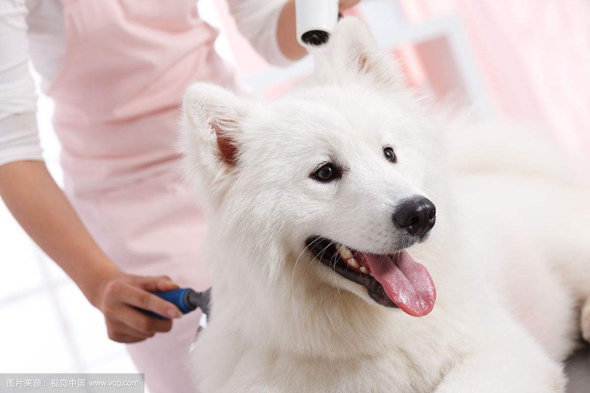
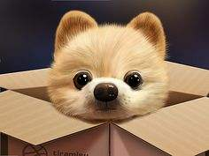
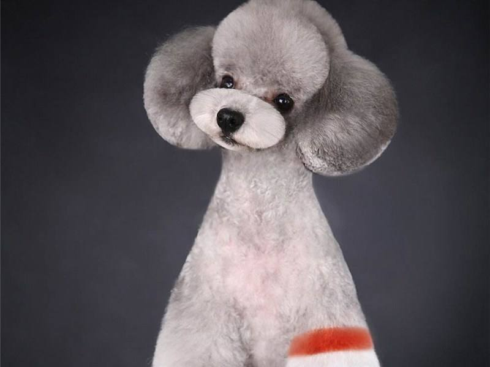
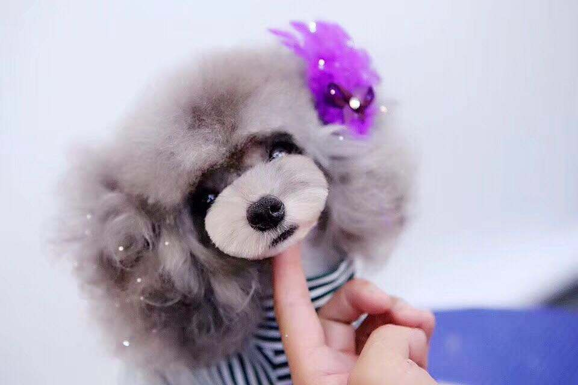
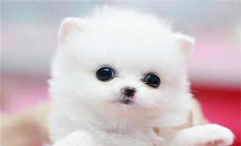
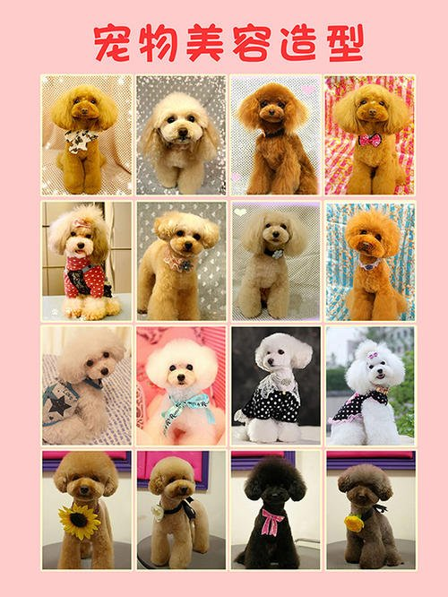

呆萌宠物
首页
宠物寄养
宠物训练
宠物美容
新闻中心
关于我们
宠物美容:
所谓的宠物美容，不只是替狗儿洗澡而已，而是借着顶级的美容用品和精湛的修剪技
法和染色,为宠物遮掩体型缺失、增添美感，从而达到让狗狗和主人身心愉悦的效果。
一般步骤：
刷理 — 梳理 — 洗澡 — 对于眼睛和耳朵的清理 — 烘干 — 指甲修理 — 基础毛发的修剪
宠物美容必要性:
宠物美容对宠物的健康大有益处。例如梳毛可以按摩宠物的皮肤、促进宠物的血液循环，减少宠物患皮肤病的几率。
据了解，全套宠物美容包括洗澡、做造型、清耳朵、剪指甲、剪脚底毛、清理肛门等等。除健康因素外，宠物美容也是一种时尚潮流，美容技巧配合修剪技术可将宠物的优点表露出来，突出宠物可爱的一面。 饲主和美容师也可根据个人爱好和当地气候，为宠物做不同造型，使宠物更容易打理。
注意事项:
1．洗澡狗儿应每隔四至八星期洗一次澡。
2．梳毛每隔几天便要帮狗儿梳一次毛。当然还要视乎不同狗儿披毛的长短而定。
3．剪指甲八个星期大的小狗要每隔一个月帮它剪一次指甲。
4．洗耳朵一星期要帮狗儿洗一次耳朵。用一些棉花球沾清洁液帮它抹耳朵。
选择我们&不一样的美







